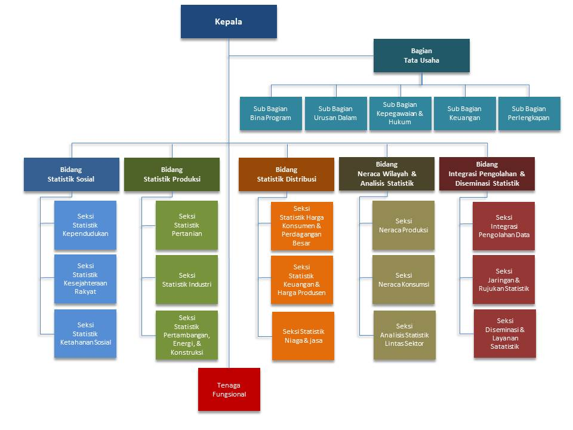

Berdasarkan Keputusan Kepala Badan Pusat Statistik Nomor 121 Tahun 2001 tentang Organisasi dan Tata Kerja Perwakilan BPS di Daerah, susunan organisasi BPS Provinsi terdiri dari:
1. Kepala BPS Provinsi mempunyai tugas memimpin BPS Provinsi sesuai dengan tugas dan fungsi BPS Provinsi serta membina aparatur BPS Provinsi agar berdaya guna dan berhasil guna.
2. Bagian Tata Usaha mempunyai tugas melaksanakan penyusunan rencana dan program, urusan kepegawaian dan hukum, perlengkapan, serta urusan dalam.
3. Bidang Statistik Sosial mempunyai tugas melaksanakan pengumpulan, pengolahan, analisis, eveluasi, pelaporan, dan pengembangan statistik kependudukan, statistik kesejahteraan rakyat, dan statistik ketahanan sosial.
4. Bidang Statistik Produksi mempunyai tugas melaksanakan pengumpulan, pengolahan, analisis, evaluasi, pelaporan, dan pengembangan statistik pertanian, statistik industri, serta statistik pertambangan, energi, dan konstruksi.
5. Bidang Statistik Distribusi mempunyai tugas melaksanakan pengumpulan, pengolahan, analisis, evaluasi, pelaporan, dan pengembangan statistik harga konsumen dan harga perdagangan besar, statistik keuangan dan harga produsen, serta statistik niaga dan jasa.
6. Bidang Neraca Wilayah dan Analisis Statistik mempunyai tugas melaksanakan penyusunan neraca produksi, neraca konsumsi, dan analisis statistik lintas sektor.
7. Bidang Integrasi Pengolahan dan Diseminasi Statistik mempunyai tugas melaksanakan integrasi pengolahan data, pengelolaan jaringan dan rujukan statistik, serta diseminasi dan layanan statistik.
8. Kelompok Jabatan Fungsional mempunyai tugas melakukan kegiatan sesuai dengan jabatan fungsional masing-masing berdasarkan ketentuan peraturan perundang-undangan yang berlaku.
 bpsjabar
bpsjabar BPS Provinsi Jawa Barat
BPS Provinsi Jawa Barat BPS Provinsi Jawa Barat
BPS Provinsi Jawa Barat